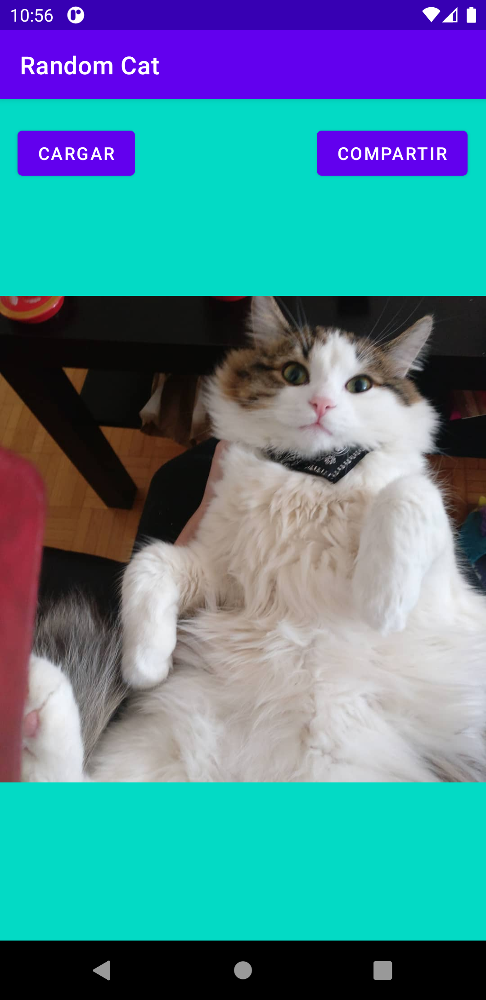
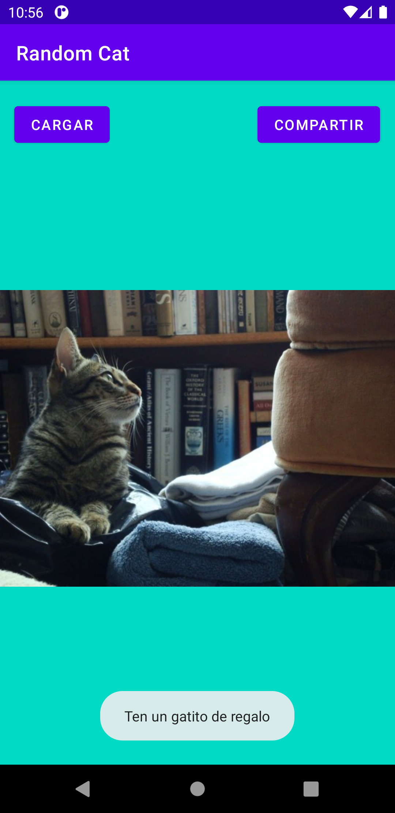
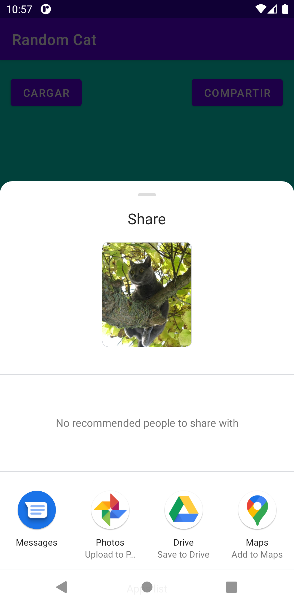
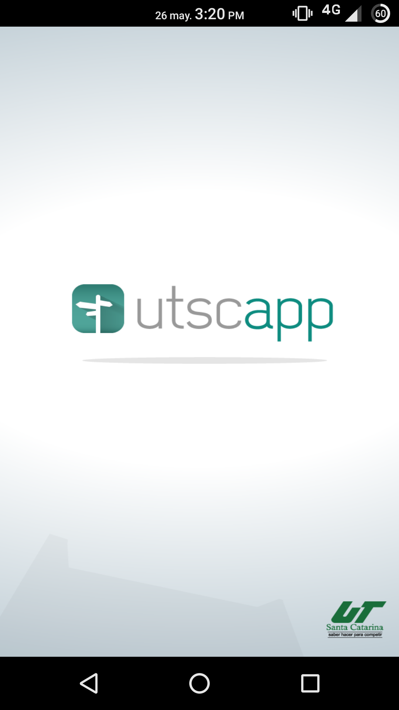
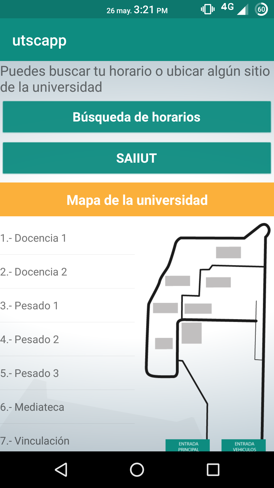
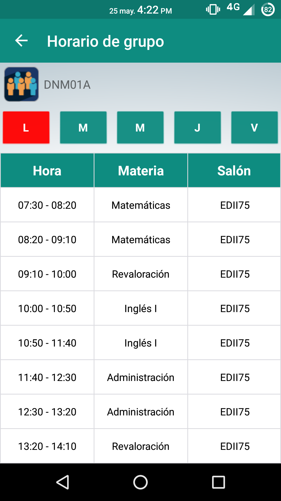
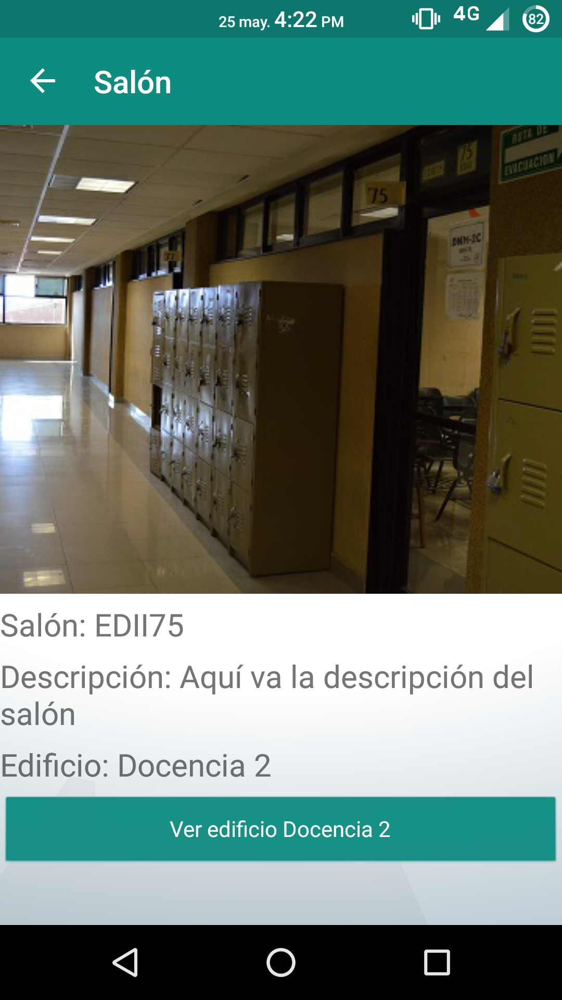
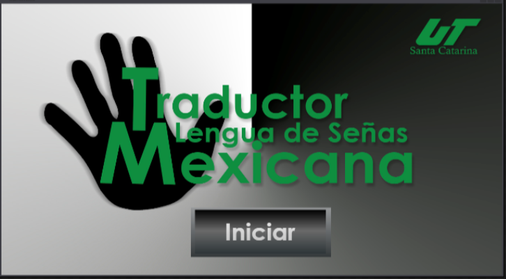
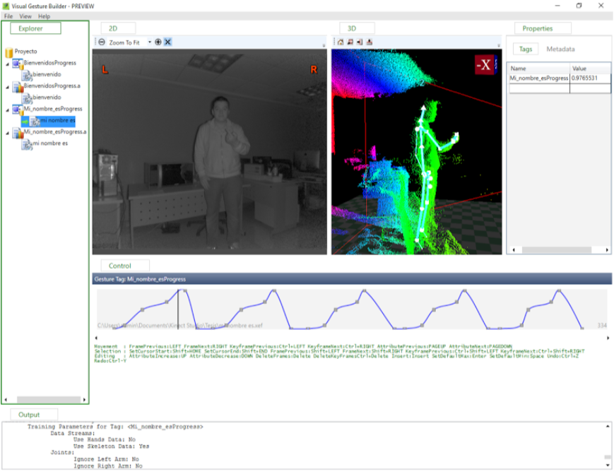
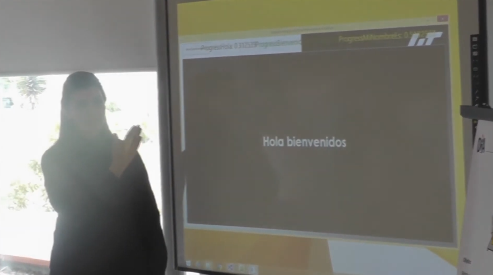

Random Cat
Proyecto personal de una aplicación móvil usando Kotlin y una API REST. La app carga imágenes aleatorias de gatitos que puedes guardar en el celular o compartir en otras apps.
2021
Hola, soy
Desarrollador Full Stack. Construyo aplicaciones web empresariales de extremo a extremo, del frontend en Angular a las APIs en .NET que las sostienen.
Desarrollador Full Stack con cerca de 10 años de experiencia en desarrollo de software. Desde 2018 me he especializado en construir aplicaciones web empresariales, actualmente enfocado en el ecosistema Angular + .NET.
Formo parte del equipo tecnológico en el sector de seguros, donde trabajo a lo largo de todo el stack: frontend en Angular con Tailwind CSS, una capa BFF en NestJS entre el frontend y las APIs, y backend en .NET con Entity Framework sobre SQL Server. Cada cambio va acompañado de pruebas unitarias (Jest en web y BFF, MSTest en las APIs) y se despliega vía pipelines de Jenkins hacia AKS y servidores on-prem con IIS.
Los proyectos en los que trabajo siguen principios de Clean Architecture, Screaming Architecture y Vertical Slice Architecture — el código se organiza por funcionalidad de negocio, no por capas técnicas.
Una selección de proyectos en los que he trabajado a lo largo de mi carrera.



Proyecto personal de una aplicación móvil usando Kotlin y una API REST. La app carga imágenes aleatorias de gatitos que puedes guardar en el celular o compartir en otras apps.
2021




Aplicación móvil para la Universidad Tecnológica de Santa Catarina que muestra el horario de alumnos y profesores, da acceso al sitio de calificaciones y un mini mapa de las aulas de la institución. Desarrollada con Xamarin Forms y un servicio web en PHP.
2017



El proyecto consistía en un software para detectar el movimiento de las manos por medio del dispositivo Kinect y asociarles un significado en texto y voz. Fue desarrollado con WPF, C# y Kinect SDK.
2016
Desarrollador Full Stack
Profesor de asignatura
Desarrollador Web
Puedes escribirme por correo o encontrarme en GitHub y LinkedIn.